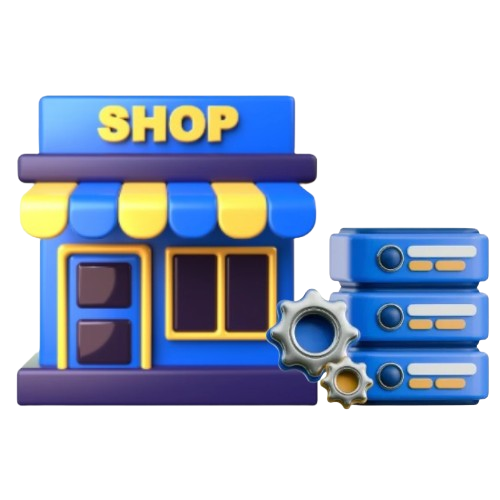

BUILT FOR SARI-SARI STORES & SMALL BUSINESS OWNERS
Your Everyday
Store Assistant
Sari Track is a simple, free digital notebook to easily manage sales, utang, and daily essentials.

EVERYTHING YOU NEED
Run your store with calm, not clutter
Tap, compute, done. Never miss a peso of benta
Quicky tally customer purchases and calculate exact change. No mental headaches
Remember who owes you
Keep clear utang records with friendly payments notes, log partial payments in one click
Know what to stock before your shelves run dry
Check stock levels of your products at a glance so more products, more sales
Just three core tools to run your store at ease.
Sales
Record daily store sales quickly and easily.Tap products and calculate exact customer totals in seconds.
Utang Ledger
Keep track of customer credits and partial payments without notebook confusion, lost pages or misunderstandings.
Inventory
Know your stock levels at a glance and receive low stock alerts before essential neignborhood goals run out
Ready to digitize and grow your store today?
Whether you're behind the counter, relaxing during midday lull, or balancing your accounts at closing time - Sari Track is always ready on your phone, tablet or laptop without setup hassle or scheduling.